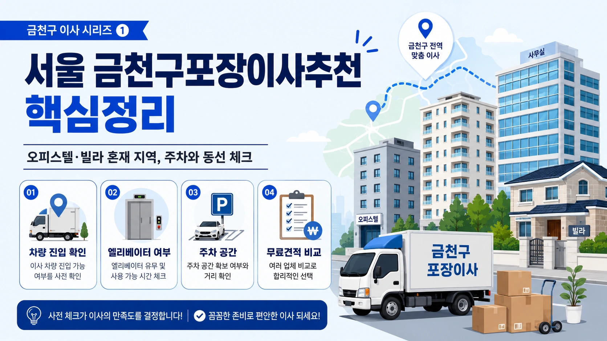
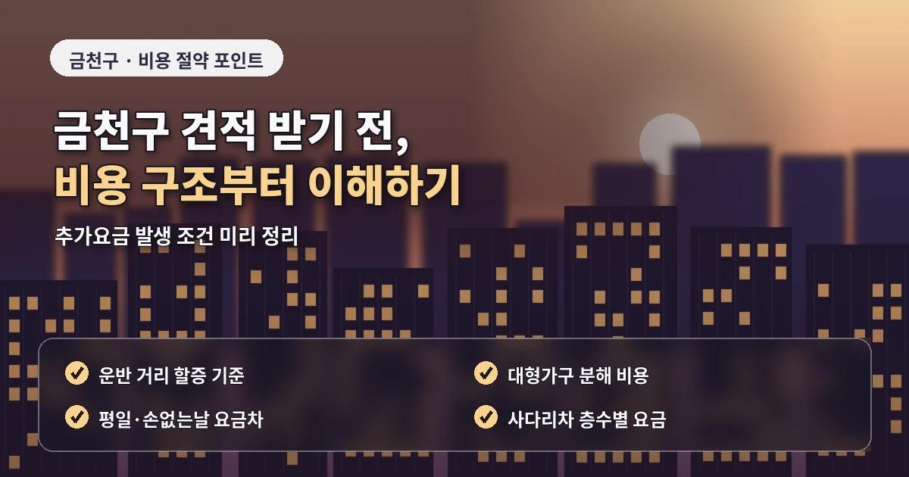
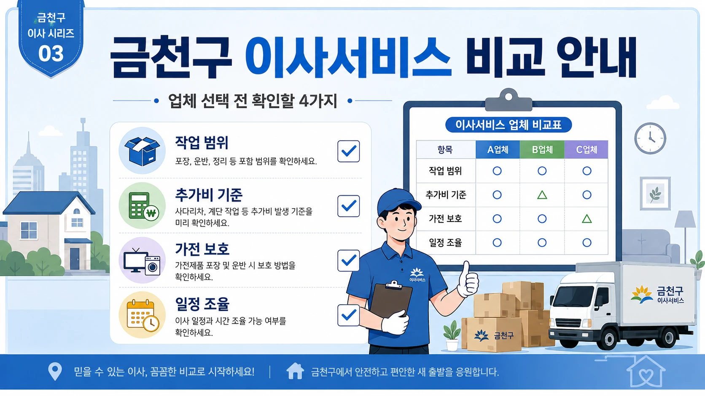

서울 금천구포장이사추천 추가비 확인법
금천구 포장이사는
오피스텔, 빌라, 아파트,
산업단지 주변 주거지가 함께 있어
작업 조건을 세밀하게 확인해야 합니다.
가산동은 업무시설과 오피스텔이 많고,
독산동은 아파트와 빌라가 혼재되어 있으며,
시흥동은 생활형 주거와 오래된 건물이
함께 자리한 지역입니다.

이런 구조에서는
같은 평수라도 이동 동선과 주차 조건에 따라
견적 차이가 생길 수 있습니다.
비용과 견적이 달라지는 핵심 기준
금천구 포장이사 비용을 확인할 때는
화물차 진입 가능 여부가 중요합니다.
업무지구 주변은 시간대에 따라
차량 대기가 어려울 수 있고,
빌라 지역은 골목이 좁아
건물 앞 정차가 제한될 수 있습니다.
차량이 멀리 서면
작업자가 짐을 옮기는 거리가 길어지고
운반 시간이 늘어날 수 있습니다.
견적 상담 전에는
짐 목록을 정리해두는 것이 좋습니다.

냉장고,
세탁기,
건조기,
침대,
책장,
분해가 필요한 가구,
파손에 주의할 물건을 따로 적어두면
업체가 필요한 인원과 차량을 더 정확히 판단합니다.
업체 비교 전 확인해야 할 사항
금천구 포장이사 업체추천을 볼 때는
추가비 안내가 명확한지 확인해야 합니다.
계단 운반,
장거리 운반,
사다리차,
가구 분해 조립,
특수 가전 이동,
폐기물 처리 여부는
업체마다 비용 기준이 다를 수 있습니다.
처음 금액이 낮아도
이 항목이 빠져 있으면
최종 비용이 달라질 수 있습니다.
가산동 오피스텔 이사는
엘리베이터 예약과 주차 위치가 중요합니다.
입주민 이동이 많은 시간대에는
엘리베이터 사용이 제한될 수 있고,
건물 내부 보양 규정이 있을 수 있습니다.

이사 가능 시간을 미리 확인하고
업체와 작업 순서를 맞춰두는 것이 좋습니다.
추가비용을 줄이는 준비 방법
독산동과 시흥동의 빌라나 다세대주택은
계단 폭과 현관 구조를 확인해야 합니다.
대형 가전이나 침대 프레임이
계단을 통과하기 어렵다면
분해 작업이나 별도 운반 방식이 필요할 수 있습니다.
사진으로 계단과 현관을 전달하면
업체가 더 정확한 견적을 제시할 수 있습니다.
포장이사 비교견적은
같은 조건으로 받아야 의미가 있습니다.
한 업체에는 사다리차를 포함해 문의하고,
다른 업체에는 제외하면
금액 비교가 정확하지 않습니다.
출발지와 도착지의
층수, 엘리베이터, 주차,
차량 진입 가능 여부를
동일하게 전달하는 것이 중요합니다.
계약 전 마지막 체크포인트
이사 날짜도 비용에 영향을 줍니다.
월말, 주말, 손 없는 날은 수요가 몰려
예약이 빠르게 마감될 수 있습니다.
가능하다면 평일이나 월중 날짜를 함께 문의해
견적 부담을 낮추는 방법도 고려할 수 있습니다.
금천구 포장이사는
추가비용 조건을 미리 정리하는 것이 핵심입니다.
업체의 기본 비용만 보지 말고
포장 범위, 운반 조건,
보상 기준, 일정 조율 능력까지 확인하면
더 안정적인 이사 준비가 가능합니다.
금천구 포장이사에서 놓치기 쉬운 항목
금천구는 가산동 업무지구와 독산동, 시흥동 주거지가 함께 있어
이사 차량의 접근성과 주차 가능 시간이 중요합니다.
특히 오피스텔이나 상가형 건물은 지하주차장 높이 제한이 있을 수 있고,
건물 앞 정차가 어려운 경우도 있습니다.
이런 조건은 견적서에 직접 반영될 수 있으므로
상담 전 사진이나 간단한 설명으로 미리 전달하는 것이 좋습니다.
차량이 가까이 접근하지 못하면 장거리 운반이 생길 수 있고,
계단 이동이 추가되면 작업 인원도 달라질 수 있습니다.
금천구 포장이사추천 업체를 비교할 때는
기본 비용에 어떤 항목이 포함되는지도 확인해야 합니다.
분해 조립, 가전 보호, 바닥 보양, 폐기물 이동,
특수 가전 운반이 포함인지 별도인지 확인하면
최종 비용 차이를 더 정확히 비교할 수 있습니다.
금천구 포장이사는 업무지구와 주거지가 섞여 있어
이사 시간대 선택도 중요합니다.
출퇴근 시간이나 차량 통행이 많은 시간은 피하는 것이 좋고,
도착지 엘리베이터 예약 시간과 작업 시작 시간을 함께 맞춰야 합니다.
이렇게 준비하면 견적 오차와 현장 혼선을 줄일 수 있습니다.
금천구 포장이사 업체를 선택할 때는
작업 인원이 실제 짐의 양에 맞게 배치되는지도 확인해야 합니다.
인원이 부족하면 작업 시간이 길어지고
급하게 운반하는 과정에서 물건 보호가 약해질 수 있습니다.
견적서에는 기본 비용과 별도 비용을 나누어 확인해야 합니다.
이 구분이 명확하면 업체별 금액 차이를 더 정확히 판단할 수 있습니다.
자주 묻는 질문
A. 차량 진입이나 계단 작업 조건에 따라 추가비가 생길 수 있어 사전 확인이 필요합니다.
A. 엘리베이터 예약과 주차 위치, 건물 보양 규정을 먼저 확인해야 합니다.
A. 짐 목록, 대형가전, 분해가 필요한 가구, 도착지 조건을 정리해두면 좋습니다.